鞍山市铁东区胜利小学欢迎您！
首页 > 详情信息
2021年3月20日，我校全体教师集中东校区参加了本学期第一次（总第98次）“三环五步”教科研活动。参加本次活动的还有集团成员学校张浦二小的部分老师。
首先，由6位老师进行课堂展示。
语文组，我校的吴佳丽老师执教了 游记《记金华的双龙洞》一课，课前吴老师精心准备，整节课从“理清线索，感悟双线交织”“抓住特点，品悟情景交融”“注重表达，习得游记写法”三方面来展开教学，为大家带来了一堂精彩的语文课。
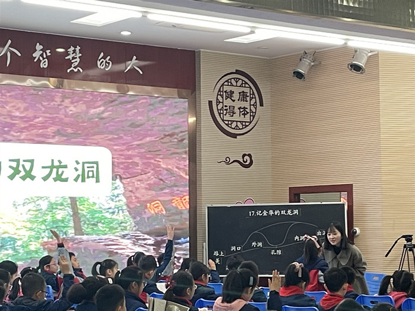
数学组，我校的王娟老师执教了《2和5的倍数特征》一课。这节课王老师着力培养学生的推理能力，把“通过数的组成，推理得数2和5的倍数特征”作为探究的价值。把“4和25的倍数特征”、“8和125的倍数特征”的探索作为思维生长的方向，由表及里，由点及面，将合情推理和演绎推理相结合来发展学生的推理能力。
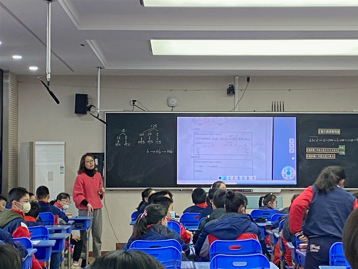
英语组，我校王丛碧老师执教了《6B Unit5 A party作文课》，在这节课的设计中，王老师针对“如何将派对活动内容进行拓展延伸”这一切入点进行写作指导，将英语写作步骤详细分化为details：activities about skills和activities about festival。王老师循循善诱的指导使这节作文课上得扎实有效。
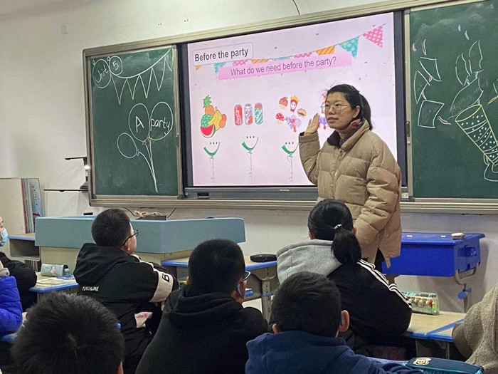
体育组，我校的任洁老师执教了《跳跃：助跑后单脚起跳触摸悬挂物》一课，任老师这节课以彩带、皮球、有手印的板为教学器材，让学生尝试用膝盖、头、手摸高，循序渐进，由易到难，让学生学会技术动作。
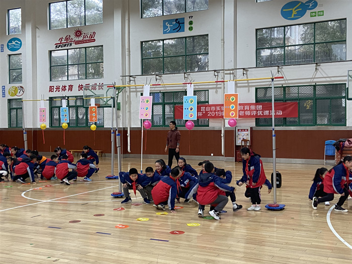
音乐组，我校的鲁昊林老师执教了《小黄鹂鸟》一课，鲁教师进入课堂，用二胡曲《赛马》引入蒙古族音乐，通过构建与蒙古族小朋友相互交流，共同表演歌曲的情景，导入练声曲，迅速引起学生的兴趣，也为这节课的二声部学唱做好准备。在最后的歌曲表演加入乐器碰铃，并请学生上台表演，学生能够更有趣味的演唱歌曲,更好的活跃了课堂气氛。
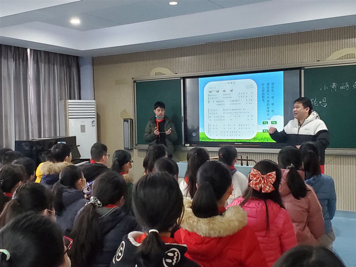
信息技术组，我校的陶晓婷老师执教了《在幻灯片中插入图片》一课，本课任务是要为家乡制作一份演示文稿做宣传，陶老师选择了最有代表性的四个特色，昆曲、亭林公园、奥灶面、周庄。为了增加趣味性，陶老师自制了一个FLASH动画随机抽取主题，抽到哪个就用哪个作为主题，并把本节课的任务称作为魔法，用魔法贯穿整课，不管是从内容上，还是审美上都提升了幻灯片的整体效果。
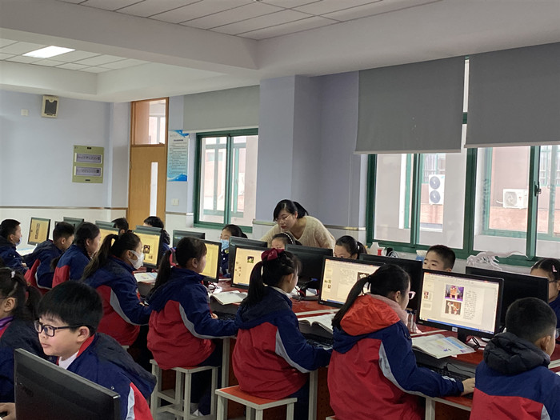
之后，各组的六位老师先进行了说课，围绕教学环节阐述了设计意图，后由我校的骨干老师进行点评。
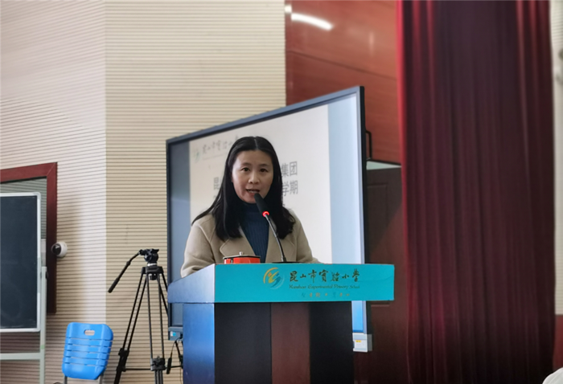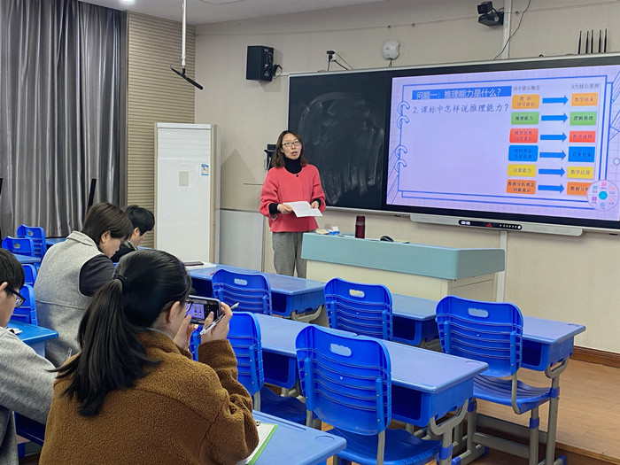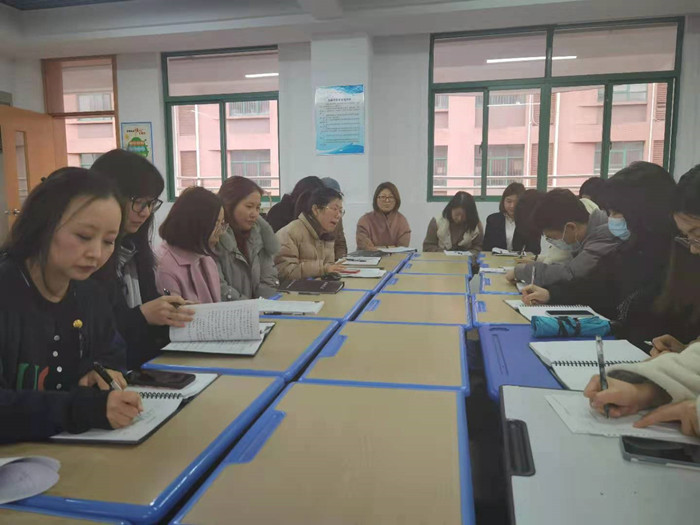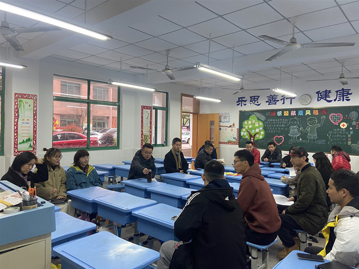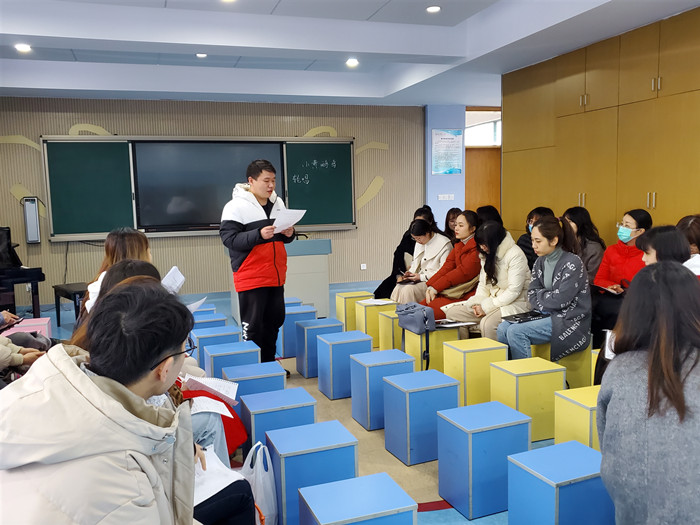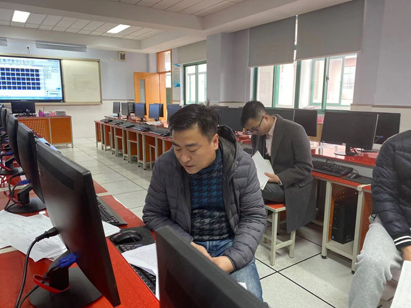
本次活动，为青年老师们互相学习和锻炼提供了很好的平台，提升了青年教师们的课堂驾驭能力与课堂教学技能，也增进了学校之间、集团成员之间的交流和友谊。